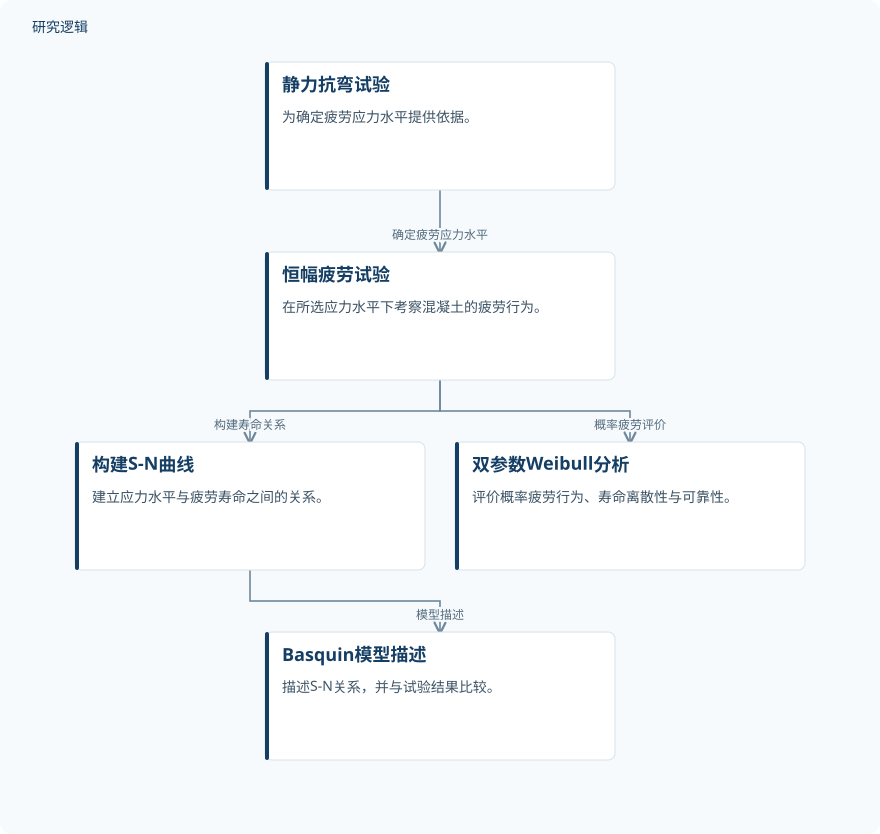

摘要解读
混杂纤维混凝土疲劳表征：S-N曲线、威布尔可靠性建模与变幅荷载效应
Fatigue characterization of hybrid fibre-reinforced concrete: S-N curve development, Weibull reliability modelling, and effect of variable amplitude loading
解读更新 2026-11-10 14:54 · 依据公开摘要整理，未核验全文细节
混杂纤维能否让混凝土更耐疲劳，同时让寿命表现更稳定？这项研究将疲劳寿命与统计可靠性放在一起考察，提示“寿命最高”与“离散性更低”未必对应同一种配比。
文章目录
混凝土抗疲劳，不只看能承受多少次循环
反复荷载引起的循环退化，是影响结构混凝土耐久性和服役寿命的重要因素。研究围绕普通混凝土、单一钢纤维混凝土和钢—聚丙烯混杂纤维混凝土展开，既关注疲劳寿命，也关注寿命分布的离散性与可靠性。以下解读仅依据本次提供的完整摘要。
从静力抗弯试验连接到寿命曲线与概率分析
研究对象为混凝土棱柱体，共考察七种配合比：普通混凝土，以及纤维体积分数分别为0.5%、1.0%和1.5%的钢纤维混凝土与混杂纤维混凝土。混杂体系采用钢纤维与聚丙烯纤维，比例为75:25。
研究先依据静力抗弯试验确定疲劳应力水平，再在0.6–0.9的应力水平下开展恒幅疲劳试验，应力比为0.1、频率为5 Hz，并构建S-N曲线。随后采用Basquin模型描述应力—寿命关系，以双参数Weibull分布分析概率疲劳行为。摘要还说明研究涉及变幅弯曲加载，但未展开其加载方案和具体结果。
依据摘要整理的疲劳表征流程


仅展示摘要明确说明的恒幅疲劳试验与模型分析关系，不代表论文原图，也不补充变幅加载细节。
下载 SVG图示关系说明
实线表示相邻阶段的信息流，虚线表示跨阶段联系或反馈。
静力抗弯试验 → 恒幅疲劳试验：确定疲劳应力水平；恒幅疲劳试验 → 构建S-N曲线：构建寿命关系；构建S-N曲线 → Basquin模型描述：模型描述；恒幅疲劳试验 → 双参数Weibull分析：概率疲劳评价
寿命领先与可靠性较优，对应不同混杂掺量
摘要报告，所有配合比的疲劳寿命均随应力水平升高而下降，但混杂纤维材料表现出明显延长的疲劳寿命。作者将纤维增强带来的改善归因于裂缝桥联能力增强、裂缝扩展延缓和刚度保持能力提高，并报告Basquin模型与试验结果具有较好一致性。
Weibull分析显示，相比普通混凝土，纤维混凝土的寿命离散性降低、可靠性改善。其中，1.5%混杂纤维配合比具有最高疲劳寿命，并表现出更好的循环损伤抵抗能力；1.0%混杂配合比则呈现相对更低的寿命离散性和更好的统计可靠性。这两项结果不宜合并成单一的“最佳掺量”结论，摘要强调的是疲劳耐久性与可靠性的平衡。
摘要尚不足以界定优势的适用范围
摘要未报告各组试件数量、具体寿命数据、模型参数及拟合误差，因此无法据此判断优势幅度、统计不确定性或模型的外部验证范围。虽然给出了配合比和恒幅加载条件，但变幅载荷的顺序、幅值组合及其比较结果仍不清楚。这些属于当前摘要的信息边界，不能据此认定论文未开展相关试验或验证。
阅读启发：把寿命水平与寿命稳定性分开追问
阅读启发：对于结构疲劳与可靠性评价，值得同时追问“哪种配比寿命更高”和“哪种配比寿命更稳定”。进一步阅读原文时，可重点核对Weibull可靠性的评价依据、综合性能的权衡方式，以及变幅加载是否改变配合比之间的表现排序；当前摘要尚不能回答这些问题。
以上为本站阅读启发与建议，不是论文已验证的结论。